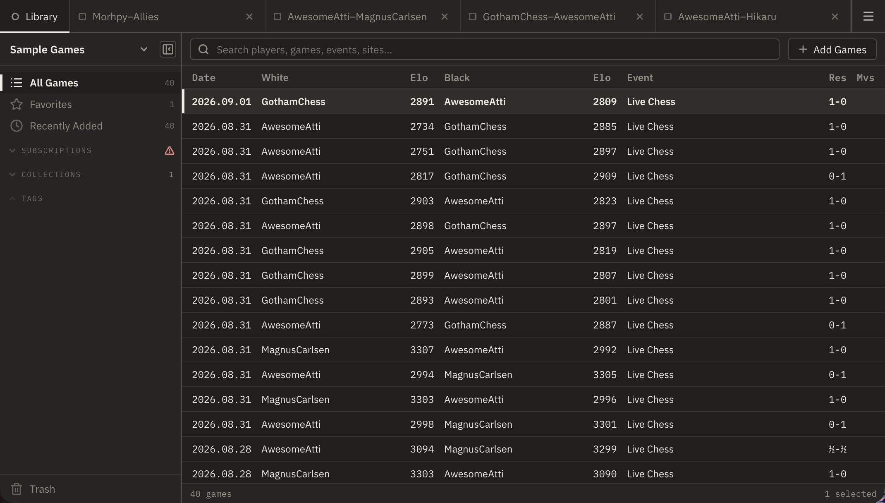
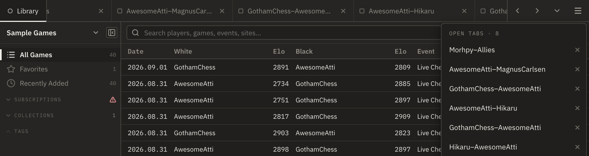
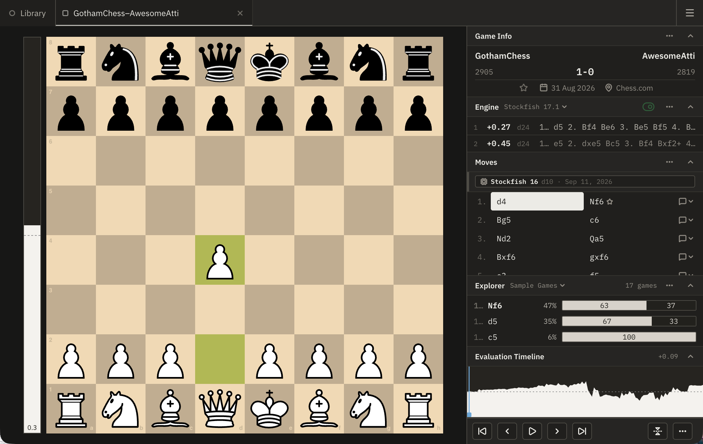
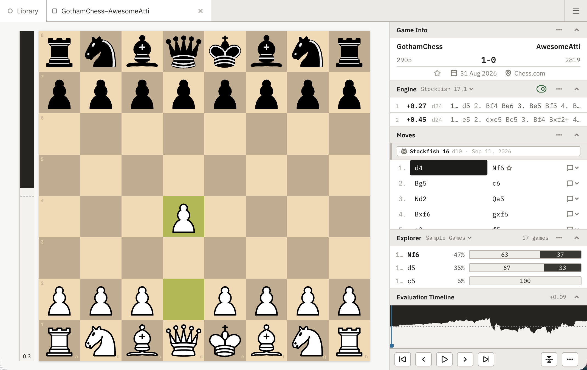
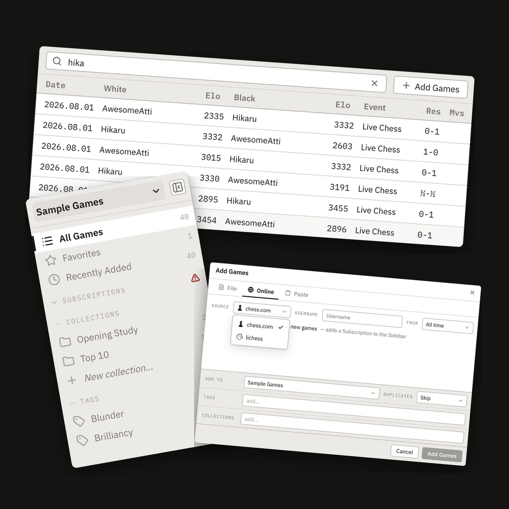
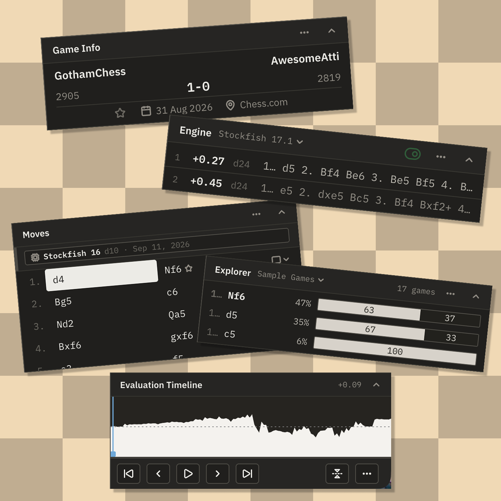
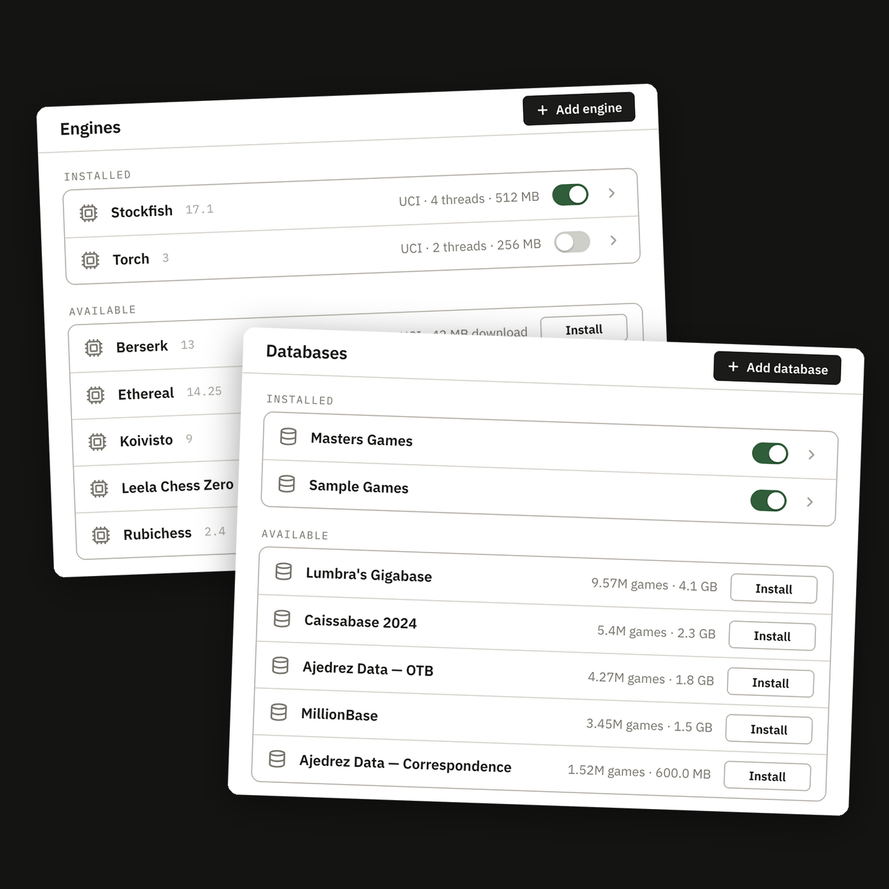

Technology preview · 0.1.1
A chess library and analysis tool for organising, viewing, and analysing your games.
Use it as a desktop app or install it as a web app and run it offline.
Free either way · no account
Heads up: this is a technology preview. Some of what you'll see is sample or simulated data to show how a feature works, and a few pieces are still being built.

Opening
Built with the latest technologies, chosen deliberately — right down to the exact version of every dependency, so what you install is exactly what was tested.
Chess software has a habit of being bloated and ageing in place. Plyvio runs on web technologies like Svelte, and the chess board developed and used by Lichess (another open-source project). It can be used offline as a native desktop application or installable web app (aka a PWA).
Approximate, current release.
Everything here is in that figure — the app, its fonts, icons, themes, translations and every dependency. Your own game library isn't; that grows as you add to it.
Middlegame
Built like modern software should be — fast, familiar, and the same wherever you open it.
01
Every game opens in its own tab, and you move between them just like your other favourite apps. The Library stays pinned on the left, so there's always a way back to it.

02
Follows your system unless you choose otherwise. Same layout, either way.


Dark Light03
Download it for your platform, or launch it straight in your browser — same layout, same features, either way.
Endgame
The Library holds everything. The Game workspace is where you study one game at a time.
It works the same way apps that hold your music and photos already do — a sidebar of collections and tags, a live search that narrows as you type and a view built for a large library.

Add games from a PGN file.
Import from a chess.com or Lichess account.
Paste PGN text straight in.
Follow a player — their new games show up on their own.
The board gets centre stage. Fitting, since every opening's really just a fight to control it. Beside it: the analysis tools every serious player needs — nothing buried.

The scoreboard: players, event, result — all the context you need.
Evaluations and best lines, right there — no digging.
What was played from this position, and how it turned out.
Graphs who's ahead, and by how much, across the whole game. Scrub through it like a video and watch exactly where it went wrong — usually around move 23.
Stay put at the bottom. Never scroll away.
Install a popular engine or database in a click, or point at one you already have. Neither's required to get started — your Bongcloud games are welcome regardless.

Install
A native desktop app, or an installable web app — same features either way.
Most people will want the web app: launch it in your browser, then install it in one click below.
Click the install icon at the end of the address bar, or open the menu and choose Install Plyvio.
Open the File menu and choose Add to Dock.
Click the install icon at the end of the address bar, or open the menu and choose Apps → Install this site as an app.
Prefer a native app? Download it instead.